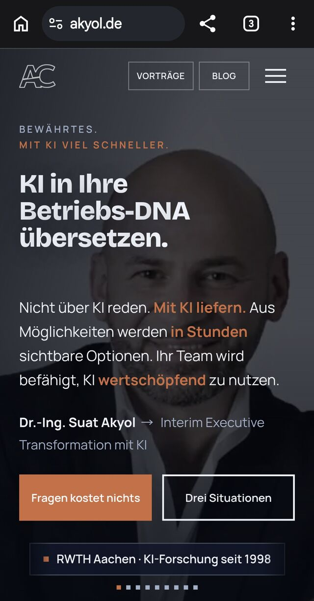

Über diesen Entwurf
Dieser Entwurf zeigt, wie die Website von Gebr. Brasseler mit denselben Inhalten neu gebaut aussehen kann: schneller, für Suchmaschinen und KI-Suche lesbar, auf jedem Gerät. Entstanden in rund zwei Stunden, gearbeitet hat dabei die KI selbst, als Demonstration meiner Arbeitsweise.
Bitte beachten. Dies ist ein unverbindlicher Entwurf von Dr.-Ing. Suat Akyol und keine Website der Gebr. Brasseler GmbH & Co. KG. Alle Texte, Bilder und Videos stammen aus der öffentlich erreichbaren Bestandsseite brasseler.de und bleiben Eigentum ihrer Rechteinhaber. Der Entwurf ist für Suchmaschinen gesperrt, konkurriert nicht mit dem Original und wird auf Wunsch jederzeit entfernt. Anmerkungen an contact@akyol.de.
Das Wichtigste in fünf Sätzen
91 statt 12
Schneller, weil leichter. Leistung mobil 91 von 100 statt 12, 1,6 MB statt 5 bis 8 MB je Seitenaufruf, Hauptbild nach 2,4 s statt 10,6 s. Dieselben Inhalte, derselbe Auftritt, ohne Baukasten.
KI-lesbar
So gebaut, dass KI-Suchen es im Produktivbetrieb finden. Organisation mit Anschrift, Gründungsjahr und Marke, Geschäftsbereiche als Leistungen, News als Artikel, FAQ, Breadcrumbs, llms.txt. Das sind die Angaben, aus denen ChatGPT, Perplexity und Google-KI zitieren. Dieser Entwurf selbst ist für Suchmaschinen gesperrt.
80 %fertig
Rund 80 Prozent fertig, meine Einschätzung. Alle Seiten des Bestands stehen, wo vorhanden in beiden Sprachen, geprüft auf tote Verweise, Barrierefreiheit und sechs Bildschirmbreiten. Grundlage der Einschätzung: die acht offenen Punkte bis zum Produktivbetrieb, unten als Liste.
2 hentstanden in
Entstanden ist er in rund zwei Stunden. Gearbeitet hat dabei die KI selbst, ich habe die Richtung vorgegeben. Inklusive Messung, Qualitätsprüfung und Livegang.
1Sprachbefehl
In diesem Entwurf ist Pflege ein Sprachbefehl. „Ändere auf der Karriereseite die Zahl der Ausbildungsplätze auf 40“ genügt: Die KI ändert den Inhalt, der Generator baut alle Seiten neu, die Prüfung läuft automatisch, danach geht es live. Es braucht jemanden mit dem Werkzeug, aber kein Redaktionssystem.
Was dieser Entwurf ist
Dieselben Inhalte wie brasseler.de, neu gebaut: alle 41 Seiten des Bestands, wo vorhanden in beiden Sprachen, alle 124 News, die Chronik mit 42 Einträgen, Videos, Bilder. Nichts ist weggelassen, nichts dazuerfunden. Die Sitemap zeigt jede Seite mit Link auf den Entwurf und auf das Original.
Gemessen, nicht geschätzt
Lighthouse mobil, beide Seiten mit derselben Methode am selben Tag. Links der Wert der Bestandsseite, rechts der Entwurf.
Leistung mobil (0 bis 100)
12
91
Hauptbild sichtbar
10,6 s
2,4 s
Blockierzeit
4.470 ms
250 ms
Layoutsprünge
0,53
0
Datenmenge Startseite
5 bis 8 MB
1,6 MB
Anfragen Startseite
81
24
Stand 02.10.2026. Bestand: Lighthouse 12 mobil, lokal gegen www.brasseler.de, 02.10.2026; Datenmenge je Lauf 4,6 bis 7,5 MB, weil das Autoplay-Video unterschiedlich weit lädt (Quality, Faber) (PageSpeed Insights am selben Tag: mobil 32, Desktop 45). Entwurf: Lighthouse 12 mobil, live gegen suak0903.github.io/brasseler, 02.10.2026 nach dem Umbau der Startseite (v13), Mittelwert aus drei Läufen (87 bis 98; Desktop 99). Auf dem Handy startet das Hintergrundvideo erst bei der ersten Berührung, die Messung zeigt den Zustand davor; der Bestand wurde mit laufendem Autoplay-Video gemessen.
Was ist anders
| Merkmal | Bestandsseite | Dieser Entwurf |
|---|---|---|
| Technik | WordPress mit Divi-Baukasten, 25 Skripte, 5 bis 8 MB je Lauf | Statisches HTML, ein Stylesheet, ein Skript, Bilder als WebP in drei Größen |
| Video | 10 MB Autoplay | Dieselbe Szene, 1,5 MB, lädt erst, wenn sie im Bild ist |
| Sprachen | Umschalter führt zur Startseite | Jede Seite kennt ihr Gegenstück, hreflang gesetzt |
| Auffindbarkeit | Schema ohne Anschrift, Marke, FAQ | Organisation vollständig, Breadcrumbs, News als Artikel, FAQ, Geschäftsbereiche als Leistungen, llms.txt |
| Cookies | Banner und Tag Manager vor dem Inhalt | Keine Verfolgung, kein Banner nötig |
| Schrift | Corporate S OT (lizenzpflichtig) | Fira Sans, frei lizenziert (OFL), ähnlicher Charakter: schlicht, ohne Serifen, gut lesbar |
Was mir beim Bestand aufgefallen ist
Gemessen am 02.10.2026 an der Live-Seite. Keine Geschmacksfragen, sondern Dinge, die sich nachprüfen lassen.
Sitemap zeigt auf den falschen Server
Die Seiten- und Chronik-Sitemap von brasseler.de nennt als Adresse brasselerhomepageprod.azurewebsites.net, einen Azure-Host, statt www.brasseler.de. Suchmaschinen bekommen so die falschen Adressen gemeldet.
Die Seite existiert zweimal
Der Azure-Host ist öffentlich erreichbar und liefert dieselben Seiten. Dazu liegen fünf englische Seiten zusätzlich unter deutschem Pfad, vier Seiten und eine News (zum Beispiel /careers/ und /en/careers/). Für Suchmaschinen ist das doppelter Inhalt.
Kein Sprachwechsel je Seite
Der Umschalter Deutsch/Englisch führt immer zur Startseite der anderen Sprache, und hreflang-Angaben fehlen. Dieser Entwurf verbindet 99 Seitenpaare direkt miteinander.
Bilder vom Entwicklungs-Server
Rund 70 Bilder (326 Verweise samt Größenvarianten auf 61 Seiten, vor allem der Chronik) werden von einem Azure-Entwicklungs-Slot geladen, nicht von brasseler.de.
PHP ohne Sicherheitsupdates
Der Server meldet PHP 7.4.30. Diese Version bekommt seit November 2022 keine Sicherheitsupdates mehr.
Ladeleistung
Ein Startseiten-Video mit 10 MB im Autoplay, Bilder in Originalgröße, Cookie-Banner und Tag Manager mit rund 400 KB Skripten und der Divi-Baukasten. Mobil Leistung 12 von 100, das Hauptbild erscheint nach über 10 Sekunden.
Strukturierte Daten
Das Schema nennt nur Seite, Website und Organisation ohne Anschrift, Kontakt, Gründungsjahr oder Marke; kein FAQ, keine Artikel, das Logo in der E-Mail-Variante. KI-Suchen finden so wenig zum Zitieren.
Was bis zum Produktivbetrieb noch fehlt
Der Entwurf ist vorzeigbar und messbar, aber kein Livebetrieb. Diese Punkte kämen vor einem Umzug auf brasseler.de dazu, in dieser Reihenfolge:
- Freigabe durch Brasseler. Texte, Bilder und Videos stammen vom Bestand und gehören dem Unternehmen; Marketing und Geschäftsführung geben Gestaltung und Inhalte frei.
- Formulare mit Rückseite. Kontakt- und Bewerbungsformulare sind Attrappen. Sie brauchen einen Empfänger (Mail oder Bewerbermanagement), Spam-Schutz und eine Datenschutz-Einwilligung.
- Pflegeweg festlegen. Heute baut ein Generator die Seiten aus einer Inhaltsdatei. Zu klären: Wer ändert Inhalte, wer gibt frei, und läuft das über die KI-Arbeitsweise oder über ein Redaktionssystem, das den Generator füttert.
- Suche. Das Suchfeld des Bestands ist nicht übernommen; bei 200 Seiten reicht eine kleine clientseitige Suche über einen vorgebauten Index.
- Rechtstexte und Cookies. Impressum, Datenschutz und AGB auf den Entwurf anpassen. Ohne Tracking entfällt der Cookie-Banner; soll gemessen werden, dann cookiefrei (zum Beispiel serverseitige Logauswertung).
- Vier Seiten übersetzen. Ausbildung, Azubi-Infotag, Tag der Ausbildung und ein Interview gibt es im Bestand nur auf Deutsch.
- Umzug. Hosting mit TLS, Weiterleitungen aller alten Adressen (301), Sitemap bei Google und Bing einreichen, hreflang live prüfen, den öffentlichen Azure-Host abschalten, die Chronik-Bilder vom Entwicklungs-Slot auf den eigenen Server holen.
- Abnahme. Barrierefreiheit nach BFSG (gilt seit Juni 2025 für Online-Angebote an Verbraucher), Test auf echten Geräten, Freigabe des Imagefilms in der finalen Fassung.
Gestaltung
Die Marke bleibt: das Brasseler-Blau, die Wortmarke mit dem Punkt, viel Weiß, die blaue Linie über jedem Abschnitt. Neu ist nur, dass alles aus einem Guss ist.
Schrift: Der Bestand nutzt Corporate S OT, eine Schrift, für die eine Lizenz nötig ist. Dieser Entwurf setzt Fira Sans, frei lizenziert und selbst gehostet. Sie hat denselben Charakter: schlicht, ohne Serifen, offen und gut lesbar, mit einem leichten Schnitt für die großen Überschriften.
Über mich

Ich bin Dr.-Ing. Suat Akyol, Interim Manager für Transformation mit KI, mit 18 Jahren Linienverantwortung in einem Medizintechnik- und Industriekonzern. Dieser Entwurf ist in rund zwei Stunden entstanden, gearbeitet hat dabei die KI selbst, ich habe die Richtung vorgegeben, so wie ich im Betrieb arbeite: Bewährtes, mit KI viel schneller. Mehr auf akyol.de.